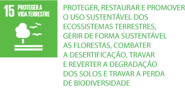
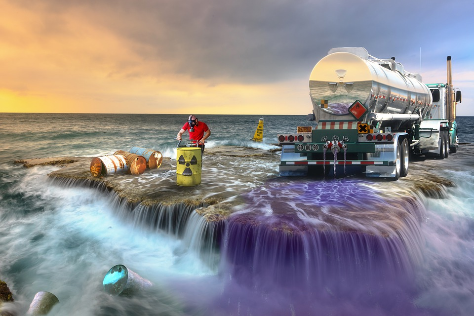

Proteger, recuperar e promover o uso sustentável dos ecossistemas terrestres, gerir de forma sustentável as florestas,
combater a desertificação, deter e reverter a degradação da terra e deter a perda de biodiversidade.

Vamos Combater a poluicão?

Podemos trabalhar Juntos para combater a puluição do planeta terra,
Vamos comtribuir para evitar a poluição do meio ambiente.
Com o uso de transportes sustentaveis podemos evitar a poluição
do ar.
Com menos uso de veiculos como: carros,onibus,motos ou outros tipos de transportes
que contribui com a poluicão ou até mesmo impresas.
Dicas para o cuidado com a Vida terrestres
1: Evitar desmatamento e queimadas;
2: Eliminar a venda e compra de animais silvestres, denunciando essas práticas;
3:Investir em produção baseada em sustentabilidade e reflorestamento;
4:Utilizar biocombustíveis e energias de fontes renováveis;
5:Reduzir ou evitar o uso de agrotóxicos;
A Poluição Prejudica nossa saúde?
A poluição atmosférica afeta quase todos os órgãos do corpo. Um estudo recente do Fórum de Sociedades Respiratórias
Internacionais mostra que a poluição do ar contribui para uma série de doenças e complicações,
desde diabetes e demência até problemas de fertilidade e leucemia infantil.
Dicas importantes para preservar o meio ambiente
Preserve as árvores. Não realize podas ilegais e nunca desmate uma área.
Cuide bem dos cursos de água.
Não pare agora.
Nunca compre animais silvestres sem registro.
Cuide bem do seu lixo.
Reutilize, reaproveite e recicle tudo que for possível.
Reduza o consumo de água.
Reduza o consumo de energia elétrica.
Sobre mim
Meu Nome Daniela tenho 16 Anos,sou de
suzano São Paulo Pretendo Estudar para
ser Policial ou Estudar Medicina, com
18 quero ir para fora do pais.